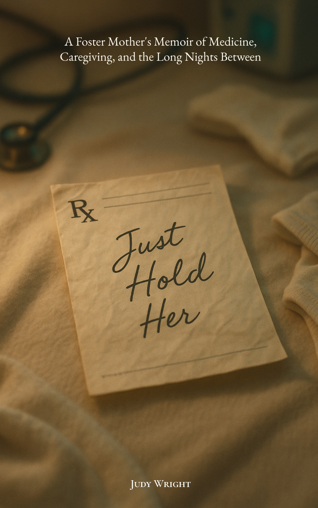

A literary memoir · Judy Wright
"Would you, please…
just hold her
until she dies?"
A foster mother's two-year vigil, recorded in spiral notebooks, two hours at a time.
Now available for pre-order
Ebook available now · Print pre-order open
Available now in all formats
Ebook
April 15, 2026
Print Edition
June 1, 2026


Not one spiral notebook. Several.
Opened and closed every two hours until the record of one small life
filled more pages than anyone expected.
674 days · Recorded without interruption
Every page holds the same hand-drawn grid.
Diapers. Glucose. Injections. Feedings. Time.
In the margins, where the grid ran out of room,
Judy Wright wrote the rest.
A foster care diary built from primary-source medical logs, documented in real time while the system prepared for a different outcome.
A two-year vigil. A hand-drawn grid.
A refusal to let go.
In the margins of those columns, where the grid ran out of room, Judy wrote what had no heading. A weight that held. A response that shouldn't have been there. The question she kept returning to, long after the institution had moved on: What about breast milk?
What no notebook could contain was what happened next.
The attachment that grew past the edge of the prognosis. The love that outlasted the plan. And the letting go, when it arrived, arrived differently than grief — and asked for everything that love had built.
Just Hold Her is a literary memoir built from those personal journals. A true story of fostering at the collision of maternal intuition and institutional protocol.
Named Michigan's Foster Parents of the Year by the Michigan Supreme Court, Judy and her husband John spent more than a decade navigating neonatal care and life-limiting diagnosis inside Michigan's foster care system. None of that prepared her for this.
The medical narrative written in those margins became the most demanding record of all: the meticulous account of what it costs to stay when the system has already moved on.
A witness story, not a rescue story.
What You Will Encounter
I · The Hand-Drawn Grid
An intimate, date-driven record of two-hour medical cycles — glucose readings, injections, feedings — kept across a 674-day high-risk foster placement and reconstructed from the author's original primary-source medical logs and personal journals.
II · The Margins
The observations that fell outside the columns, where maternal intuition pressed against the edges of institutional protocol — where the most important questions refused to stay inside the lines.
III · The Conflict
A foster mother navigating neonatal care, life-limiting diagnosis, and a child welfare system that had already begun making other arrangements — documented in real time, without the distance of retrospect.
IV · The Recognition
The story behind Michigan's Foster Parents of the Year — and what more than a decade of medically fragile foster care did and did not prepare one family for.
V · The Witness
A literary memoir that does not resolve into rescue. A true story of fostering that asks what it means to stay, to love without a guarantee, and to hold a child the world has already turned away from.
Advance Praise
Institutional Recognition
"Michigan Foster Parents of the Year — for sustained commitment to medically fragile and high-need children in Oakland County, Michigan."
Michigan Supreme Court — State Award, 2012
"Oakland County Foster Parents of the Year — recognizing twelve years of exceptional service to children in Michigan's foster care system."
Oakland County Board of Commissioners — County Award, 2012
Medical & Caregiving Professionals
"A fantastic read. A true testament to modern medicine, unconditional love, and compassion. I could not put it down."
Linda Thulin — Nurse, Caregiver, Mother
"You feel every emotion in this book. I found myself holding my breath at times. I had tears at times. This is a wonderful read."
Jeannette Cunningham — Medical Professional, Mother
Foster Care & Caregiver Community
"Such an amazing story."
Nichole Wardell — Mother, Caregiver
"I've loved reading every word and look forward to more!"
Whitney Mannering — Educator
For Readers Of
When Breath Becomes Air
The Year of Magical Thinking
The Bright Hour
Being Mortal
Another Place at the Table
This Book Was Written for You
Caregivers & Foster Parents
For those who have loved a child they were not allowed to keep, navigated a system that moves faster than grief, and chosen to stay anyway. You will recognize every page.
Medical & Hospice Professionals
For those who have been the nurse at the end of the hall — the one who stayed an extra moment, learned the name, and never knew if it mattered. It mattered.
Faith & Community Readers
For those who know that hope doesn't always announce itself. Sometimes it arrives as a bottle warmed at 3 a.m. and a name that means God has heard.
Reserve your copy
The ebook is available for pre-order now. Pre-orders open April 1. Join the mailing list to be the first to know when the link goes live.
Begin reading today
The ebook is available now. Print editions follow June 1, 2026. Both are available through your preferred bookseller.
Available now
Ebook, paperback, and hardcover editions are available through your preferred bookseller. If you are going to hold a story in your hands, it should feel like something meant to be held.
Published by Held Close Books.